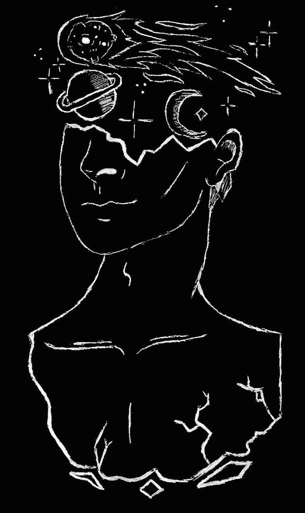

Logic, at its core, is not merely a set of rules, but the architectonic investigation into the principles of valid inference. It's the study of how conclusions must follow from premises, regardless of the specific content of those premises. It's concerned with the form of reasoning, not its subject matter. This "architectonic" nature means logic provides the underlying structural framework for all rational thought, much like the foundational architecture of a building determines its overall shape and stability. It's about the necessary connections between propositions, exploring the landscape of what must be true if certain other things are true. It transcends specific domains of knowledge, providing the universal scaffolding for rational inquiry. A flaw in logic is like a crack in the foundation – it threatens the entire edifice of knowledge built upon it.
